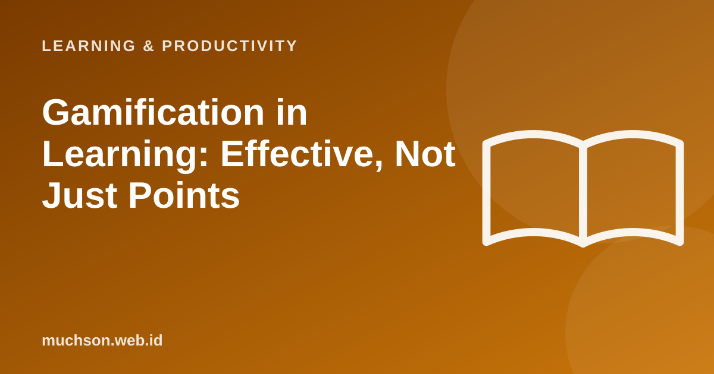

Home › Articles › Learning & Productivity
Learning & ProductivityGamification in Learning: Effective, Not Just Points
Points, badges and leaderboards are easy to add, but they do not necessarily make people learn. Gamification that works uses the logic of games to clarify goals, give quick feedback and keep the challenge just right.

Four principles that work
Text description of the diagram
- A clear goal
- A fitting challenge
- Quick feedback
- A sense of progress
then back to the first step.
Elements and their functions
| Element | Good function | Risk |
|---|---|---|
| Levels and missions | Break the material into clear stages | Feels like a task list if it has no meaning |
| Badges | Mark meaningful achievements | Chased for the collection if too easy |
| Points | Feedback on effort and accuracy | Encourages guessing for points |
| Leaderboard | Motivates competitive learners | Discourages beginners |
| Story or scenario | Gives context and relevance | Distracts from the learning goal if overdone |
Test your gamification design
Keep in mind
Gamification amplifies what is already good: clear, relevant material. On confusing material, points and badges will not save it.
FAQ
What is the difference between gamification and game-based learning?
Gamification adds game elements to a learning activity. Game-based learning uses a full game as the learning medium.
Is gamification right for every age?
It can be, with adjustments. Adults often value relevance and real progress more than childish rewards.
How do I measure success?
Look at completion, mastery (assessment scores) and long-term engagement, not just the number of points.